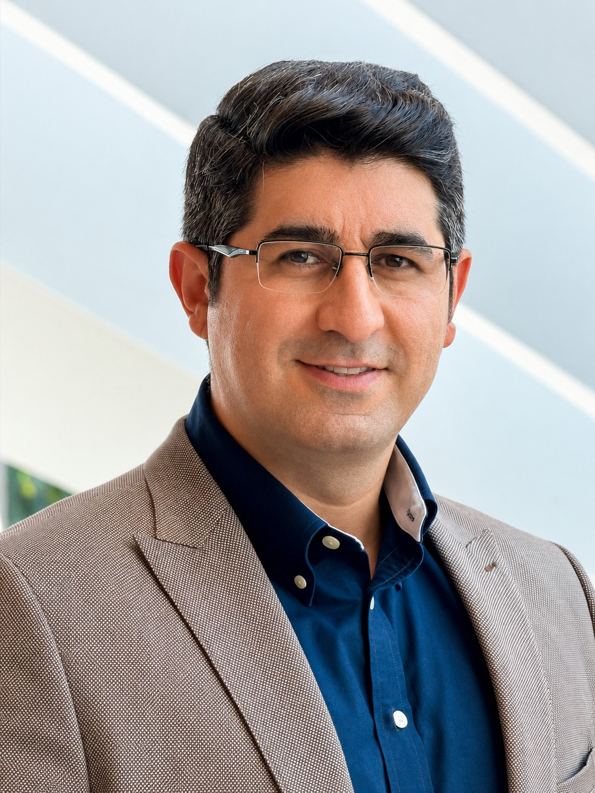

Vahid Yousefi
I study how people’s decisions shape businesses and the markets we live in.
My work connects marketing strategy, sales, and decision-making. I’m interested in what helps businesses thrive and how markets can better serve people.

A little about me
How businesses work.
Why people matter.
I’m a PhD candidate in Marketing at the Isenberg School of Management, University of Massachusetts Amherst. My background in electrical engineering and business has shaped my interest in understanding complex problems and finding practical ways to address them.
My research follows the decisions of executives, employees, and consumers. Across these settings, I want to understand how businesses build lasting value and how their choices affect the people around them.
That same curiosity shapes my teaching. I want students to leave class with useful skills, the confidence to ask good questions, and a clearer understanding of the markets they will work in.
My experience in the classroomQuestions worth
working on.
A brief look at my research, teaching, and academic life.
Beyond the deskA little time
outside.
Places I’ve explored and moments worth remembering.
Get in touch
Let’s start
a conversation.
I welcome conversations about research, teaching, and opportunities to work together.